2025-2026学年七年级数学上学期期末模拟卷
强化卷·参考答案
一、选择题：本题共10小题，每小题3分，共30分。在每小题给出的四个选项中，只有一项是符合题目要求的。
1 | 2 | 3 | 4 | 5 | 6 | 7 | 8 | 9 | 10 |
A | D | C | B | C | C | A | A | A | C |
二、填空题：本题共6小题，每小题3分，共18分。
11．
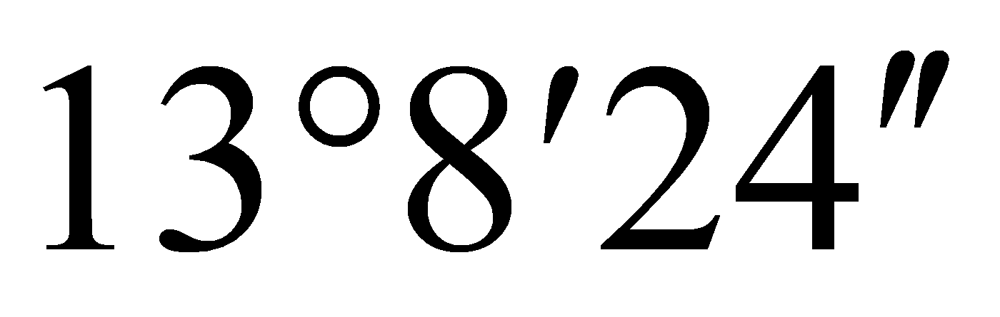
12．2400
13．
14．47
15．
16．
三、解答题（本题共8小题，第17-21题每题8分，第22-23题每题10分，第24题12分，共72分．解答应写出文字说明、证明过程或演算步骤．）
17．(8分)
【详解】（1）解：
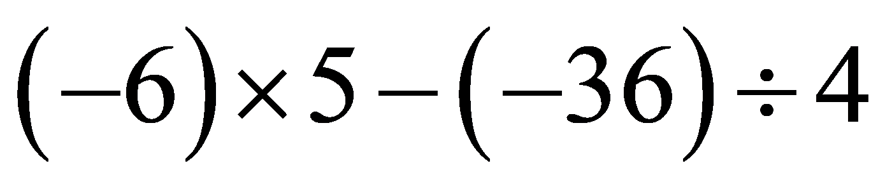
 (2分)
(2分)
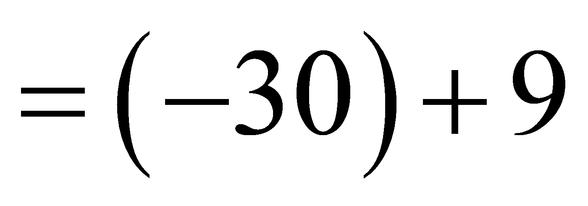
 ；(4分)
；(4分)
（2）解：
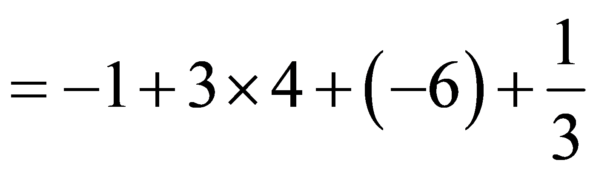
(2分)
 (8分)
(8分)
18．(8分)
【详解】（1）解：
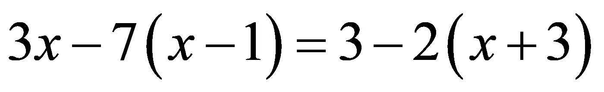
去括号，得
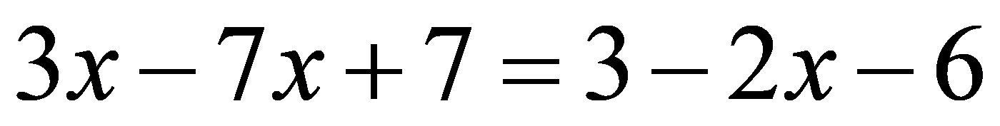
(2分)移项得：
合并同类项得：
系数化为1得： (4分)
(4分)
（2）解：
去分母得：
去括号得 (2分)
(2分)
移项得：
合并同类项得：
系数化为1得：
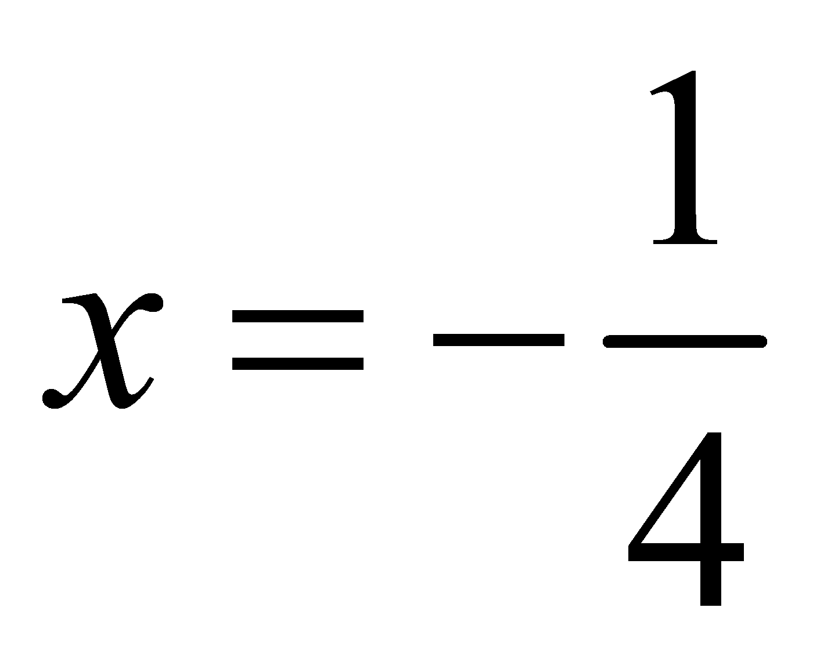
(8分)19．(8分)
【详解】解：原式
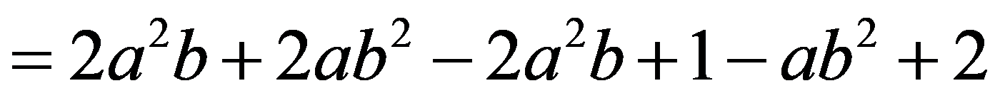
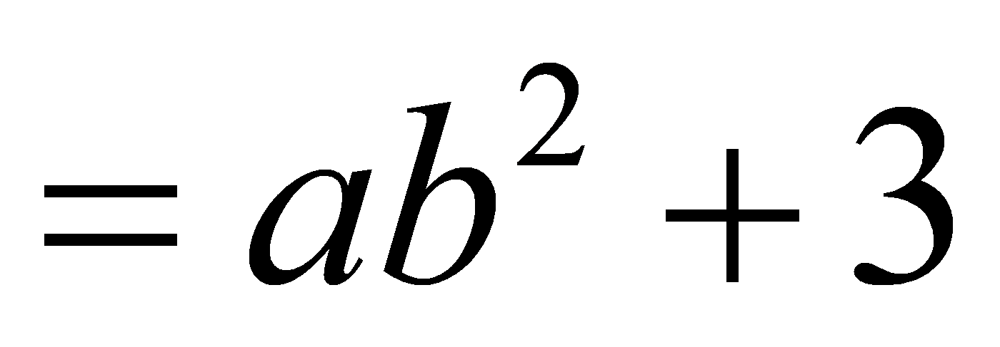
；(5分)当 ，
， 时，原式
时，原式 ．(8分)
．(8分)
20．(8分)
【详解】（1）解：由图可知：参加调查的人数共有：
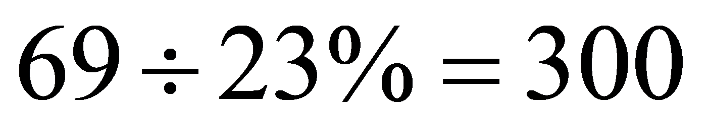
人；表示“C”的人数为：
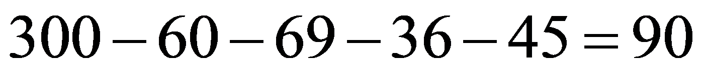
人；∴表示“C”的扇形圆心角的度数为： ；(2分)
；(2分)
（2）解：
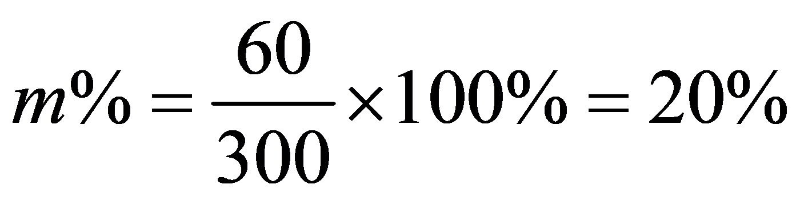
，∴ ；
；
补全条形统计图如下：
(6分)
（3）解：
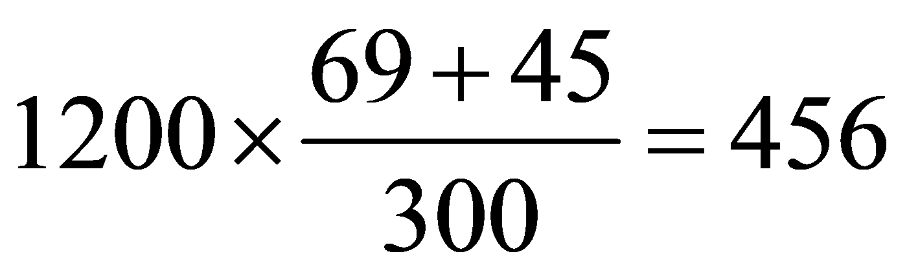
人，∴全校
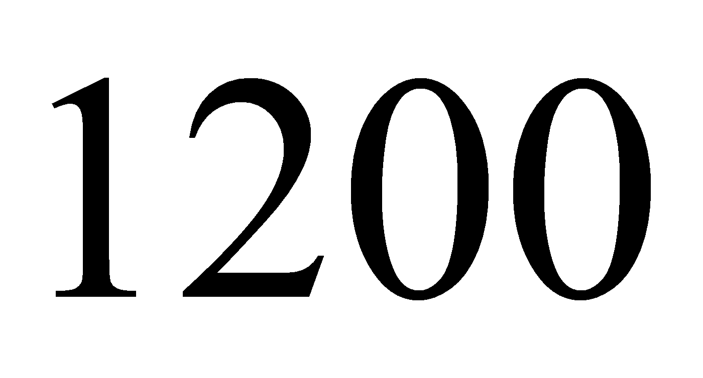
人中喜欢球类运动的有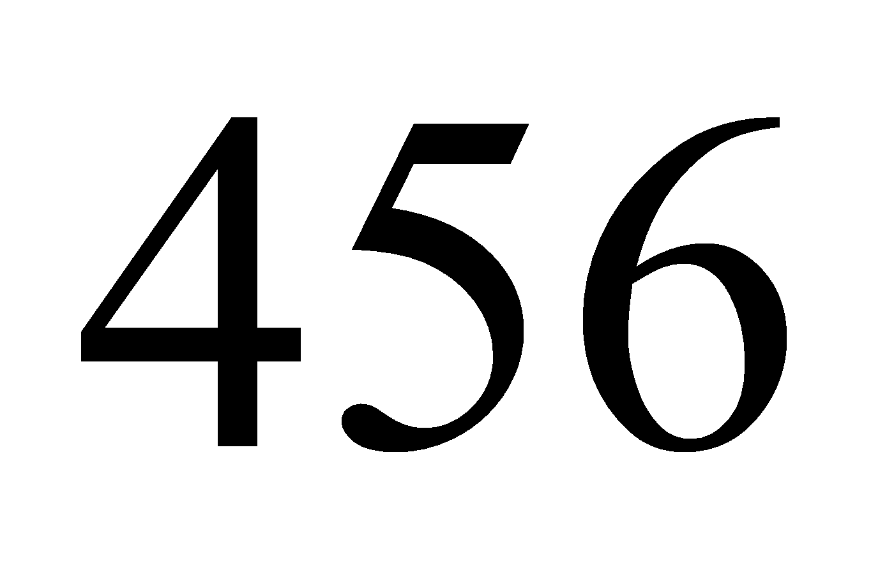
人；(8分)21．(8分)
【详解】（1）解：这个几何体的名称是六棱柱；(3分)
（2）解：侧面积为： ．(8分)
．(8分)
22．(10分)
【详解】（1）解：∵ ，点M是
，点M是 的中点，
的中点，
∴
∵，
∴
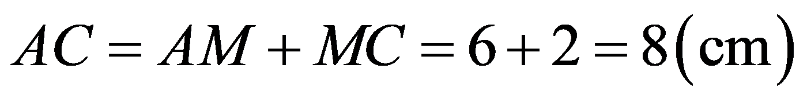
(5分)（2）解：∵N是 的中点，
的中点，
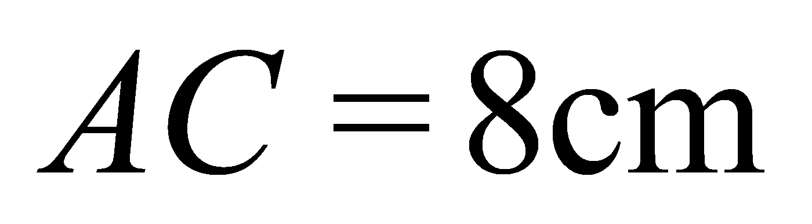
，∴ ，
，
∴
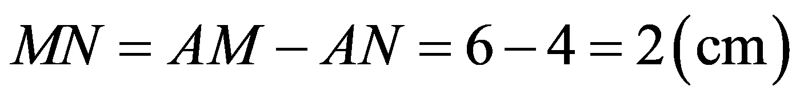
．(10分)23．(10分)
【详解】（1）解：设商场购进甲产品 件，购进乙产品
件，购进乙产品 件，
件，
根据题意，得
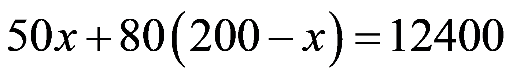
解得
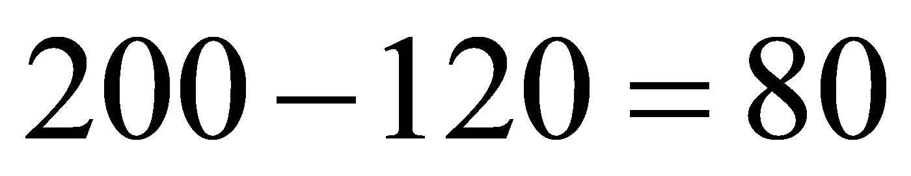
（件）答：商场购进甲产品 件，则购进乙产品
件，则购进乙产品 件．(5分)
件．(5分)
（2）根据题意，得
解得 (10分)
(10分)
24．(12分)
【详解】（1）解：

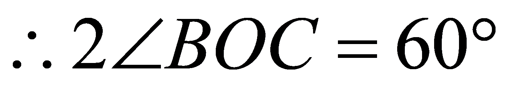
， ；(4分)
；(4分)
（2）
射线 分别为
分别为 的平分线，
的平分线，
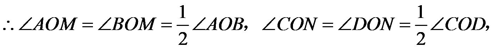
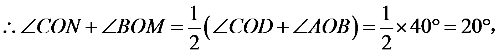
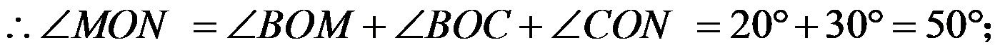
(8分)（3）
 的大小不会变化，理由如下：
的大小不会变化，理由如下：

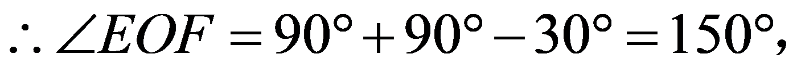
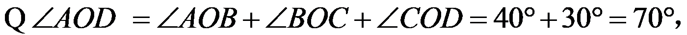

又 平分
平分 ，
，
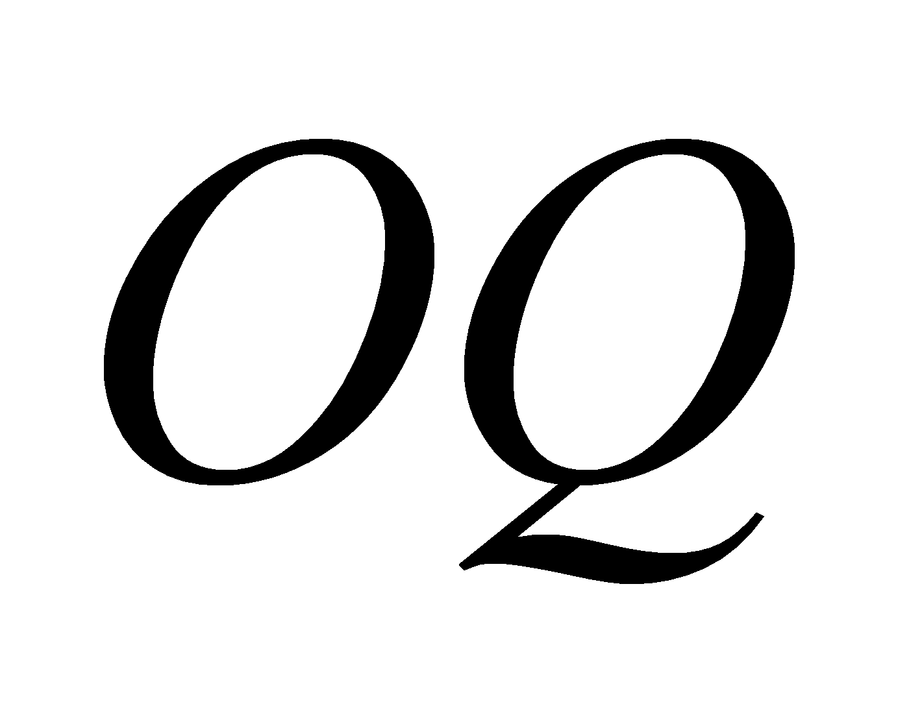
平分 ，
，
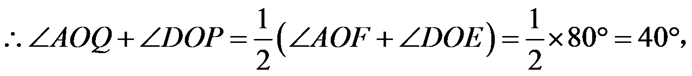
 ．(12分)
．(12分)